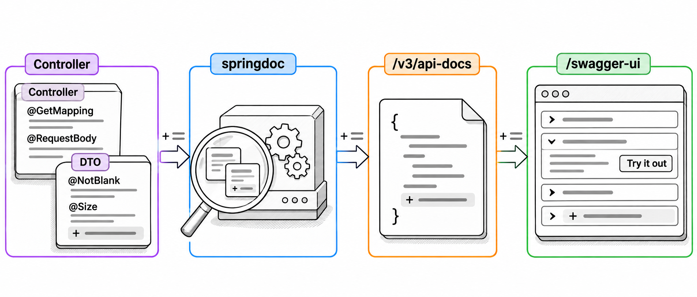
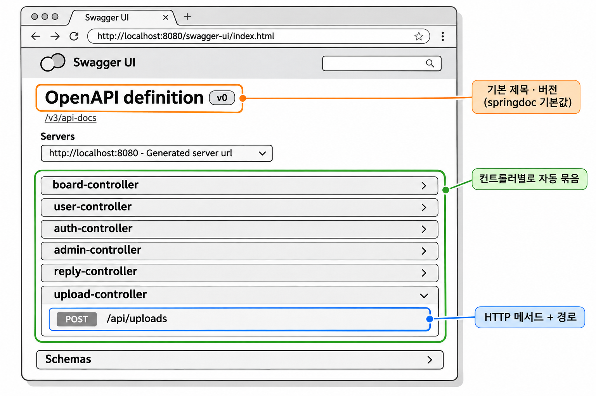
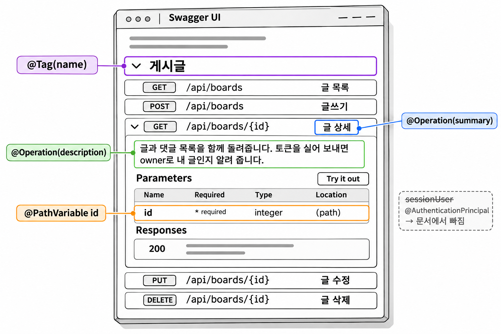
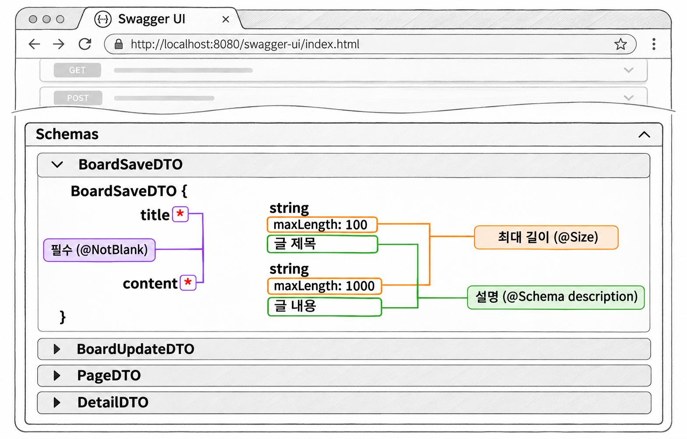
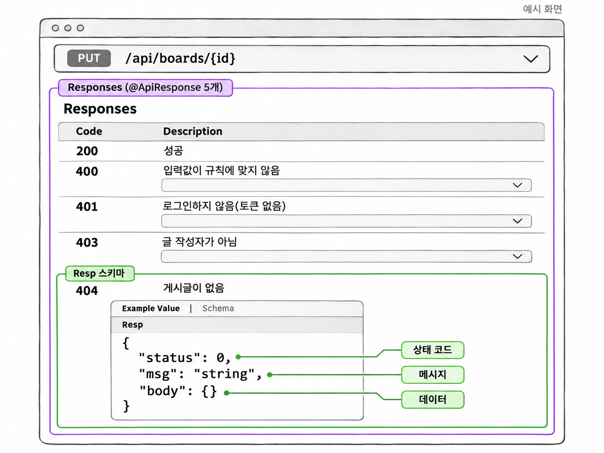
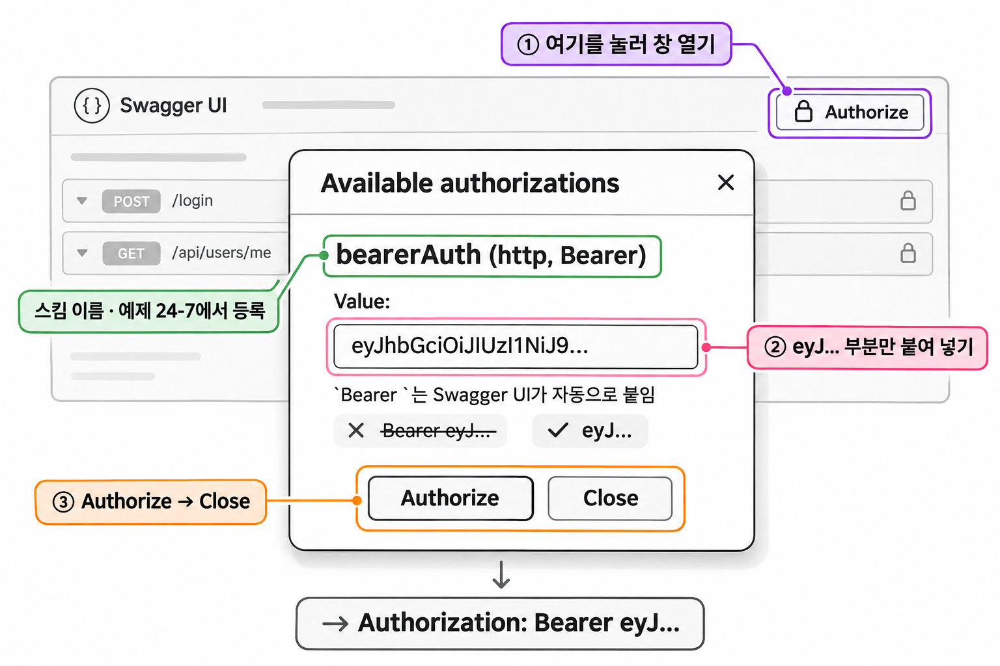
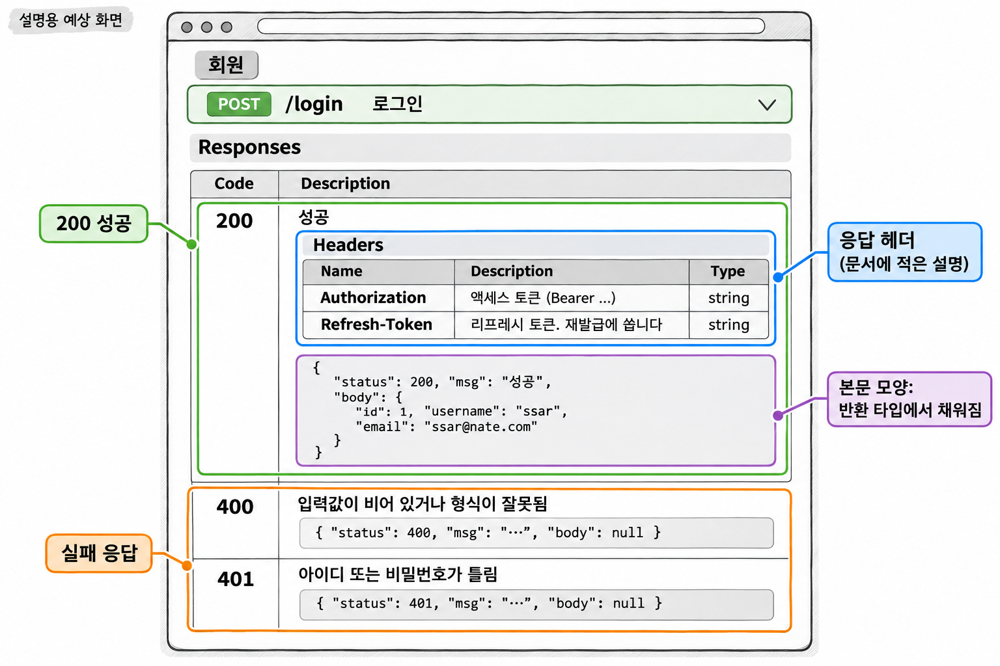
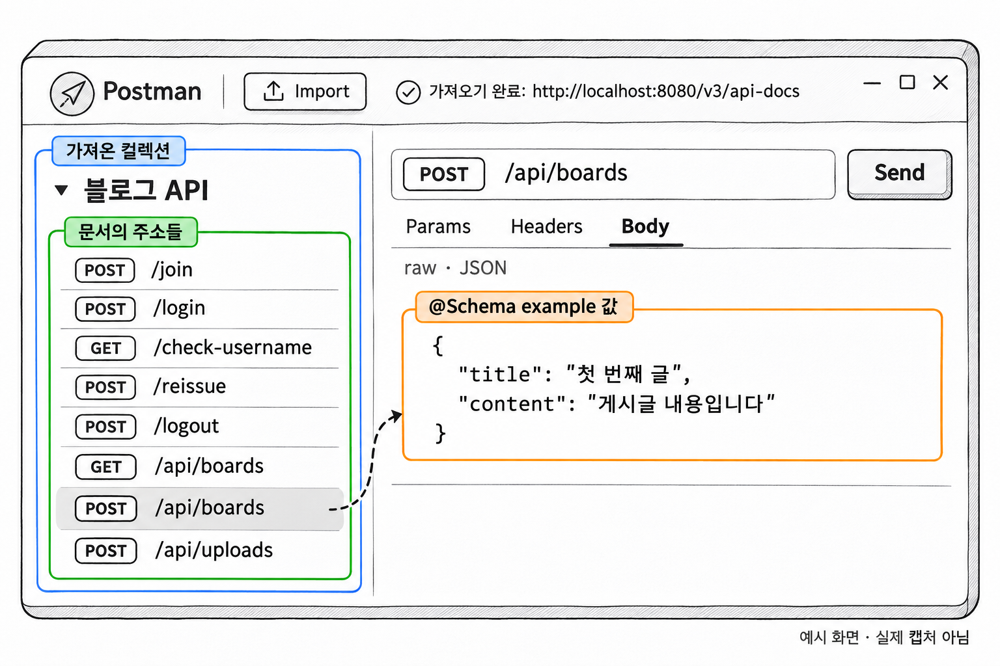

24장. API 문서란?
1. API 문서의 개념
1.1 API 문서가 필요한 이유
API 문서(API documentation)는 클라이언트 개발자가 서버 코드를 열어 보지 않고도 API를 호출할 수 있게 정리한 설명서입니다. 23장까지 만든 블로그 API의 사용법은 지금은 코드를 직접 쓴 사람만 압니다. 후속 과정에서 React 화면을 만드는 개발자는 서버 코드를 읽거나, 주소마다 서버 개발자에게 사용법을 물어야 합니다.
글쓰기 API 하나에도 클라이언트가 알아야 할 정보가 여러 가지입니다.
| 알아야 할 것 | 글쓰기 API(POST /api/boards)의 경우 |
|---|---|
| 주소와 HTTP 메서드 | POST /api/boards |
| 요청 본문 | title(100자 이하), content(1000자 이하), 둘 다 필수 |
| 인증 | Authorization 헤더에 액세스 토큰 필요 |
| 성공 응답 | Resp의 body에 저장된 글 정보 |
| 실패 응답 | 400(입력값 오류) · 401(토큰 없음) |
이 표를 위키나 문서 파일에 손으로 적어 둘 수도 있습니다. 그러면 코드를 고칠 때마다 문서도 따로 고쳐야 하고, 한 번만 빠뜨려도 문서와 실제 동작이 달라집니다. 그래서 실무에서는 코드에서 문서를 자동으로 만들고, 코드만으로는 알 수 없는 설명을 애너테이션으로 덧붙입니다. 이 장의 문서도 이 방식으로 만듭니다.
1.2 OpenAPI 명세와 Swagger UI
OpenAPI 명세(OpenAPI Specification)는 HTTP API의 주소, 파라미터, 요청 · 응답 본문, 인증 방식을 JSON이나 YAML로 적는 표준 형식입니다. 형식이 정해져 있으므로 여러 도구가 같은 문서를 읽고 쓸 수 있습니다.
코드 조각
{
"paths": {
"/api/boards/{id}": {
"get": {
"summary": "글 상세",
"parameters": [
{ "name": "id", "in": "path", "required": true, "schema": { "type": "integer", "format": "int32" } }
],
"responses": { "200": { "description": "OK" } }
}
}
}
}paths 아래에 주소가 있고, 주소 아래에 HTTP 메서드가 있습니다. 메서드 아래에는 파라미터와 응답이 들어갑니다. 사람이 읽기에는 불편하지만 도구는 이 구조를 그대로 해석합니다.
Swagger UI는 OpenAPI 문서를 읽어 웹 페이지로 보여 주는 도구입니다. API마다 설명을 보여 주고, 페이지 안에서 값을 넣어 요청을 직접 보낼 수도 있습니다.
Spring Boot 프로젝트에서는 springdoc-openapi(이하 springdoc)를 씁니다. springdoc은 애플리케이션이 실행될 때 컨트롤러의 @GetMapping, @PathVariable, @RequestBody와 DTO 필드, Bean Validation 제약 조건을 읽어 OpenAPI 문서를 만듭니다. 만든 문서는 Swagger UI 화면과 함께 제공합니다.

그림 24-1처럼 문서의 원본은 코드입니다. 컨트롤러에 주소를 하나 더하고 서버를 다시 실행하면 Swagger UI에도 그 주소가 바로 나타납니다.
2. springdoc 시작하기
2.1 의존성 추가(Spring Boot 4와 springdoc 3.x)
springdoc은 Spring Boot가 버전을 관리하는 라이브러리가 아닙니다. 그래서 Spring Boot 스타터와 달리 버전을 직접 적어야 합니다. 버전은 쓰고 있는 Spring Boot에 맞춰 고릅니다. springdoc 2.x는 Spring Boot 3용이고, Spring Boot 4에는 springdoc 3.x를 씁니다. 인터넷 예제에는 2.x가 많이 보이지만 Spring Boot 4 프로젝트에 넣으면 제대로 동작하지 않습니다. 이 책은 Spring Boot 4.1.3에 springdoc 3.2.0을 씁니다.
예제 24-1 — springdoc 의존성 추가하기
이어서: 예제 23-7
파일명: build.gradle
plugins {
id 'java'
id 'org.springframework.boot' version '4.1.3'
id 'io.spring.dependency-management' version '1.1.7'
}
group = 'com.newtenco'
version = '0.0.1-SNAPSHOT'
java {
toolchain {
languageVersion = JavaLanguageVersion.of(21)
}
}
repositories {
mavenCentral()
}
dependencies {
implementation 'com.auth0:java-jwt:4.5.0'
// springdoc: 코드를 읽어 API 문서와 Swagger UI 화면을 만든다. Spring Boot가 버전을 관리하지 않아 직접 적는다
implementation 'org.springdoc:springdoc-openapi-starter-webmvc-ui:3.2.0'
implementation 'org.springframework.boot:spring-boot-h2console'
implementation 'org.springframework.boot:spring-boot-starter-data-jpa'
// 스프링 시큐리티: 넣기만 해도 모든 주소가 잠긴다. 기본 설정은 SecurityConfig에서 바꾼다
implementation 'org.springframework.boot:spring-boot-starter-security'
implementation 'org.springframework.boot:spring-boot-starter-validation'
implementation 'org.springframework.boot:spring-boot-starter-webmvc'
compileOnly 'org.projectlombok:lombok'
developmentOnly 'org.springframework.boot:spring-boot-devtools'
runtimeOnly 'com.h2database:h2'
annotationProcessor 'org.projectlombok:lombok'
// 테스트 (src/test 폴더에서만 사용)
testImplementation 'org.springframework.boot:spring-boot-starter-data-jpa-test'
testImplementation 'org.springframework.boot:spring-boot-starter-webmvc-test'
testRuntimeOnly 'org.junit.platform:junit-platform-launcher'
}
tasks.named('test') {
useJUnitPlatform() // 테스트를 JUnit으로 실행
}실행 결과
IntelliJ에서 Load Gradle Changes를 누르고 PowerShell에서 .\gradlew.bat bootRun으로 서버를 실행하면 평소처럼 다음 로그가 출력됩니다.
Tomcat started on port 8080 (http) with context path '/'springdoc-openapi-starter-webmvc-ui에는 OpenAPI 문서를 만드는 기능과 Swagger UI 화면 파일이 함께 들어 있습니다. 이름에서 보듯 Spring MVC(spring-boot-starter-webmvc)용 스타터입니다. 이름 끝이 -api인 springdoc-openapi-starter-webmvc-api는 문서만 만들고 화면은 제공하지 않습니다.
2.2 /v3/api-docs와 /swagger-ui 열어 보기
springdoc을 넣으면 주소 두 개가 생깁니다.
| 주소 | 내용 |
|---|---|
/v3/api-docs | OpenAPI 문서(JSON) |
/swagger-ui.html | Swagger UI 화면. /swagger-ui/index.html로 이동함 |
Swagger UI 화면은 열릴 때 /v3/api-docs와 그 아래 주소에서 문서와 화면 설정을 받아 옵니다. 화면에 쓰는 자바스크립트와 CSS 파일은 /swagger-ui/ 아래에서 내려받습니다.
브라우저 주소창에 http://localhost:8080/v3/api-docs를 입력하면 문서 대신 다음 응답이 돌아옵니다.
{"status":401,"msg":"로그인 후 이용해주세요","body":null}14장에서 SecurityFilterChain의 마지막 규칙을 .anyRequest().denyAll()로 정했기 때문입니다. /v3/api-docs는 앞의 어느 규칙에도 맞지 않아서 마지막 규칙에 걸립니다. 토큰이 없는 요청이 거절되면 스프링 시큐리티는 AuthenticationEntryPoint를 부르므로 403이 아니라 401이 나갑니다. /swagger-ui.html도 같은 이유로 열리지 않습니다.
그래서 문서와 화면 파일이 있는 주소를 permitAll()로 엽니다. 스프링 시큐리티는 주소 규칙을 위에서부터 비교하다가 처음 맞은 규칙 하나만 적용합니다. 문서 규칙은 반드시 anyRequest().denyAll()보다 위에 둡니다.
예제 24-2 — 문서 주소 열기
이어서: 예제 24-1
파일명: src/main/java/com/newtenco/blog/core/SecurityConfig.java
package com.newtenco.blog.core;
import com.newtenco.blog.core.filter.JwtAuthorizationFilter;
import com.newtenco.blog.core.util.JwtUtil;
import com.newtenco.blog.core.util.RespFilter;
import lombok.RequiredArgsConstructor;
import org.springframework.beans.factory.annotation.Value;
import org.springframework.context.annotation.Bean;
import org.springframework.context.annotation.Configuration;
import org.springframework.http.HttpMethod;
import org.springframework.security.config.annotation.web.builders.HttpSecurity;
import org.springframework.security.config.http.SessionCreationPolicy;
import org.springframework.security.crypto.bcrypt.BCryptPasswordEncoder;
import org.springframework.security.crypto.password.PasswordEncoder;
import org.springframework.security.web.SecurityFilterChain;
import org.springframework.security.web.authentication.UsernamePasswordAuthenticationFilter;
import org.springframework.web.cors.CorsConfiguration;
import org.springframework.web.cors.CorsConfigurationSource;
import org.springframework.web.cors.UrlBasedCorsConfigurationSource;
import java.util.List;
@RequiredArgsConstructor
@Configuration
public class SecurityConfig {
private final JwtUtil jwtUtil;
@Value("${app.cors.allowed-origins}")
private List<String> allowedOrigins;
@Bean
public PasswordEncoder passwordEncoder() {
return new BCryptPasswordEncoder();
}
@Bean
public CorsConfigurationSource corsConfigurationSource() {
CorsConfiguration config = new CorsConfiguration();
config.setAllowedOrigins(allowedOrigins);
config.setAllowedMethods(List.of("GET", "POST", "PUT", "DELETE", "OPTIONS"));
config.addAllowedHeader("*");
config.setExposedHeaders(List.of("Authorization", "Refresh-Token"));
UrlBasedCorsConfigurationSource source = new UrlBasedCorsConfigurationSource();
source.registerCorsConfiguration("/**", config);
return source;
}
@Bean
public SecurityFilterChain filterChain(HttpSecurity http) throws Exception {
http.headers(headers -> headers.frameOptions(frame -> frame.sameOrigin()));
http.cors(cors -> cors.configurationSource(corsConfigurationSource()));
http.csrf(csrf -> csrf.disable());
http.formLogin(form -> form.disable());
http.httpBasic(basic -> basic.disable());
http.logout(logout -> logout.disable());
http.sessionManagement(session -> session.sessionCreationPolicy(SessionCreationPolicy.STATELESS));
http.addFilterBefore(new JwtAuthorizationFilter(jwtUtil), UsernamePasswordAuthenticationFilter.class);
http.exceptionHandling(ex -> ex
.authenticationEntryPoint((req, res, e) -> RespFilter.fail(res, 401, "로그인 후 이용해주세요"))
.accessDeniedHandler((req, res, e) -> RespFilter.fail(res, 403, "권한이 없습니다")));
http.authorizeHttpRequests(auth -> auth
.requestMatchers(HttpMethod.OPTIONS, "/**").permitAll()
.requestMatchers("/join", "/login", "/check-username").permitAll()
.requestMatchers(HttpMethod.POST, "/reissue", "/logout").permitAll()
.requestMatchers("/h2-console/**").permitAll()
.requestMatchers("/v3/api-docs/**", "/swagger-ui/**", "/swagger-ui.html").permitAll()
.requestMatchers("/api/admin/**").hasRole("ADMIN")
.requestMatchers(HttpMethod.GET, "/api/boards/**").permitAll()
.requestMatchers("/api/**").hasAnyRole("USER", "ADMIN")
.requestMatchers(HttpMethod.GET, "/uploads/**").permitAll()
.anyRequest().denyAll()
);
return http.build();
}
}실행 결과
서버를 다시 실행하고 http://localhost:8080/v3/api-docs를 열면 JSON 문서가 출력됩니다. info의 title은 "OpenAPI definition", version은 "v0"입니다. paths 아래에는 /join, /login, /api/boards, /api/boards/{id} 등 지금까지 만든 주소가 모두 들어 있습니다.
이어서 http://localhost:8080/swagger-ui.html을 열면 /swagger-ui/index.html로 이동하면서 Swagger UI 화면이 나타납니다.

생성형 예시 · 실제 실행 안 함
/v3/api-docs/**는 /v3/api-docs 자체에도 맞고 그 아래 /v3/api-docs/swagger-config에도 맞습니다. Swagger UI는 화면 설정을 swagger-config 주소에서 읽으므로 /v3/api-docs 하나만 열면 화면이 제대로 뜨지 않습니다.
설정을 하나도 하지 않았는데 주소마다 HTTP 메서드, 경로 변수, 요청 본문 모양이 이미 들어 있습니다. springdoc이 @GetMapping, @PathVariable, @RequestBody를 읽어 만든 결과입니다. 반면 API의 목적, 토큰이 필요한지, 어떤 실패 응답이 오는지는 코드 모양만으로 알 수 없어서 비어 있습니다. 이 정보는 3절과 4절에서 채웁니다.
3. 문서 내용 채우기
3.1 OpenAPI 빈으로 제목 · 설명 · 버전 쓰기
문서 맨 위의 "OpenAPI definition"과 "v0"은 springdoc의 기본값입니다. io.swagger.v3.oas.models.OpenAPI 객체를 빈으로 등록하면 springdoc이 그 빈을 바탕으로 문서를 만듭니다.
예제 24-3 — 문서 제목과 버전 정하기
이어서: 예제 24-2
파일명: src/main/java/com/newtenco/blog/core/OpenApiConfig.java
package com.newtenco.blog.core;
import io.swagger.v3.oas.models.OpenAPI;
import io.swagger.v3.oas.models.info.Info;
import org.springframework.context.annotation.Bean;
import org.springframework.context.annotation.Configuration;
@Configuration
public class OpenApiConfig {
@Bean
public OpenAPI openAPI() {
return new OpenAPI()
.info(new Info()
.title("블로그 API")
.description("Spring Boot · JPA · Security · JWT로 만든 블로그 REST API 문서입니다.")
.version("v1.0.0"));
}
}실행 결과
Swagger UI를 새로 고치면 맨 위 제목이 "블로그 API"로 바뀌고 옆에 "v1.0.0"이 표시됩니다. 제목 아래에는 description에 적은 문장이 보입니다.
Info는 OpenAPI 문서의 info 항목에 들어갈 내용입니다. 여기서 version은 API의 버전으로, build.gradle의 version이나 OpenAPI 명세 자체의 버전과는 관계가 없습니다. API를 크게 바꿔서 클라이언트도 코드를 고쳐야 할 때 이 값을 올립니다.
3.2 @Tag와 @Operation으로 API 묶고 설명하기
Swagger UI는 기본으로 컨트롤러 클래스 이름(board-controller)으로 API를 묶습니다. 클래스에 @Tag를 붙이면 묶음의 이름과 설명을 정할 수 있습니다. 메서드에 붙이는 @Operation에는 API 하나의 한 줄 요약(summary)과 자세한 설명(description)을 적습니다.
기본 문법
@Tag(name = "묶음이름", description = "묶음설명")
public class 컨트롤러명 {
@Operation(summary = "한줄요약", description = "자세한설명")
@GetMapping("주소")
public ResponseEntity<?> 메서드명() { }
}예제 24-4 — 게시글 API에 이름과 설명 붙이기
이어서: 예제 24-3
파일명: src/main/java/com/newtenco/blog/board/BoardController.java
package com.newtenco.blog.board;
import com.newtenco.blog.core.util.Resp;
import com.newtenco.blog.user.User;
import io.swagger.v3.oas.annotations.Operation;
import io.swagger.v3.oas.annotations.tags.Tag;
import jakarta.validation.Valid;
import lombok.RequiredArgsConstructor;
import org.springframework.http.ResponseEntity;
import org.springframework.security.core.annotation.AuthenticationPrincipal;
import org.springframework.web.bind.annotation.DeleteMapping;
import org.springframework.web.bind.annotation.GetMapping;
import org.springframework.web.bind.annotation.PathVariable;
import org.springframework.web.bind.annotation.PostMapping;
import org.springframework.web.bind.annotation.PutMapping;
import org.springframework.web.bind.annotation.RequestBody;
import org.springframework.web.bind.annotation.RequestParam;
import org.springframework.web.bind.annotation.RestController;
@Tag(name = "게시글", description = "글 목록 · 상세 · 쓰기 · 수정 · 삭제")
@RequiredArgsConstructor
@RestController
public class BoardController {
private final BoardService boardService;
@Operation(summary = "글 목록", description = "글을 3개씩 나눠 최신 글부터 돌려줍니다. keyword를 주면 제목에 keyword가 들어간 글만 찾습니다.")
@GetMapping("/api/boards")
public ResponseEntity<?> list(@RequestParam(value = "page", defaultValue = "0") Integer page,
@RequestParam(value = "keyword", defaultValue = "") String keyword) {
return Resp.ok(boardService.글목록(page, keyword));
}
@Operation(summary = "글쓰기", description = "로그인한 회원을 작성자로 글을 저장합니다.")
@PostMapping("/api/boards")
public ResponseEntity<?> save(@AuthenticationPrincipal User sessionUser, @Valid @RequestBody BoardRequest.SaveDTO reqDTO) {
return Resp.ok(boardService.글쓰기(reqDTO, sessionUser));
}
@Operation(summary = "글 수정", description = "작성자만 제목과 내용을 바꿀 수 있습니다.")
@PutMapping("/api/boards/{id}")
public ResponseEntity<?> update(@AuthenticationPrincipal User sessionUser, @PathVariable("id") Integer id,
@Valid @RequestBody BoardRequest.UpdateDTO reqDTO) {
return Resp.ok(boardService.글수정(id, reqDTO, sessionUser.getId()));
}
@Operation(summary = "글 삭제", description = "작성자만 지울 수 있습니다. 글에 달린 댓글도 함께 지워집니다.")
@DeleteMapping("/api/boards/{id}")
public ResponseEntity<?> delete(@AuthenticationPrincipal User sessionUser, @PathVariable("id") Integer id) {
boardService.글삭제(id, sessionUser.getId());
return Resp.ok(null);
}
@Operation(summary = "글 상세", description = "글과 댓글 목록을 함께 돌려줍니다. 토큰을 실어 보내면 owner로 내 글인지 알려 줍니다.")
@GetMapping("/api/boards/{id}")
public ResponseEntity<?> detail(@AuthenticationPrincipal User sessionUser, @PathVariable("id") Integer id) {
Integer sessionUserId = sessionUser == null ? null : sessionUser.getId();
return Resp.ok(boardService.글상세(id, sessionUserId));
}
}실행 결과
Swagger UI를 새로 고치면 board-controller 대신 "게시글" 묶음이 보입니다. 주소 옆에는 "글 목록", "글쓰기" 같은 요약이 붙고, 주소를 눌러 펼치면 description에 적은 설명이 나타납니다.

생성형 예시 · 실제 실행 안 함
detail()의 파라미터 목록에는 id만 있고 sessionUser는 없습니다. springdoc은 @AuthenticationPrincipal이 붙은 파라미터를 클라이언트가 보내는 값으로 보지 않아서 문서에서 뺍니다. sessionUser는 14장의 인증 필터가 토큰에서 꺼내 넣어 주는 값이므로 문서에 없는 것이 맞습니다.
3.3 @Schema로 요청 · 응답 DTO 설명하기
@Schema는 DTO와 그 필드에 설명(description)과 예시 값(example)을 붙입니다. 요청 DTO는 @RequestBody의 타입이라 이미 문서에 들어가 있습니다. springdoc은 Bean Validation 제약 조건도 읽습니다. 그래서 @NotBlank가 붙은 필드는 필수 값으로, @Size(max = 100)이 붙은 필드는 최대 길이 100으로 표시됩니다.
응답 DTO는 사정이 다릅니다. 컨트롤러가 ResponseEntity<?>를 반환하면 springdoc은 ? 자리에 어떤 타입이 오는지 모릅니다. 반환 타입을 ResponseEntity<Resp<BoardResponse.PageDTO>>처럼 구체적으로 적어야 Resp와 그 body의 모양이 문서에 그려집니다. 6장의 Resp.ok()는 이미 ResponseEntity<Resp<B>>를 반환하는 제네릭 정적 메서드라서 메서드 안의 코드는 바꾸지 않아도 됩니다.
스키마 이름도 챙겨야 합니다. springdoc은 중첩 클래스로 만든 DTO의 스키마 이름을 바깥 클래스 이름 없이 단순한 이름으로 정합니다. 그래서 BoardRequest.SaveDTO와 16장의 ReplyRequest.SaveDTO는 둘 다 SaveDTO가 됩니다. BoardRequest.UpdateDTO와 17장의 UserRequest.UpdateDTO도 이름이 같아집니다. 이름이 같은 스키마는 문서에 하나만 남습니다. 그대로 두면 POST /api/boards의 요청 본문이 댓글의 SaveDTO 모양으로 보일 수 있습니다. 이런 충돌은 @Schema(name = ...)으로 이름을 따로 정해 막습니다.
예제 24-5 — 요청 · 응답 DTO 설명하기
이어서: 예제 24-4
파일명: src/main/java/com/newtenco/blog/core/util/Resp.java
package com.newtenco.blog.core.util;
import io.swagger.v3.oas.annotations.media.Schema;
import org.springframework.http.HttpStatus;
import org.springframework.http.ResponseEntity;
@Schema(description = "모든 API가 함께 쓰는 공통 응답")
public record Resp<T>(
@Schema(description = "HTTP 상태 코드", example = "200")
Integer status,
@Schema(description = "결과 메시지", example = "성공")
String msg,
@Schema(description = "응답 데이터. 실패하면 null")
T body) {
public static <B> ResponseEntity<Resp<B>> ok(B body) {
return ResponseEntity.ok(new Resp<>(200, "성공", body));
}
public static ResponseEntity<Resp<Void>> fail(HttpStatus status, String msg) {
return ResponseEntity.status(status).body(new Resp<>(status.value(), msg, null));
}
}파일명: src/main/java/com/newtenco/blog/board/BoardRequest.java
package com.newtenco.blog.board;
import com.newtenco.blog.user.User;
import io.swagger.v3.oas.annotations.media.Schema;
import jakarta.validation.constraints.NotBlank;
import jakarta.validation.constraints.Size;
public class BoardRequest {
@Schema(name = "BoardSaveDTO", description = "글쓰기 요청")
public record SaveDTO(
@Schema(description = "글 제목", example = "첫 글입니다")
@NotBlank(message = "제목을 입력해주세요")
@Size(max = 100, message = "제목은 100자 이하로 입력해주세요")
String title,
@Schema(description = "글 내용", example = "Swagger UI에서 쓴 글입니다")
@NotBlank(message = "내용을 입력해주세요")
@Size(max = 1000, message = "내용은 1000자 이하로 입력해주세요")
String content) {
public Board toEntity(User user) {
return Board.builder()
.title(title)
.content(content)
.user(user)
.build();
}
}
@Schema(name = "BoardUpdateDTO", description = "글 수정 요청")
public record UpdateDTO(
@Schema(description = "바꿀 제목", example = "고친 제목입니다")
@NotBlank(message = "제목을 입력해주세요")
@Size(max = 100, message = "제목은 100자 이하로 입력해주세요")
String title,
@Schema(description = "바꿀 내용", example = "고친 내용입니다")
@NotBlank(message = "내용을 입력해주세요")
@Size(max = 1000, message = "내용은 1000자 이하로 입력해주세요")
String content) {
}
}파일명: src/main/java/com/newtenco/blog/board/BoardResponse.java
package com.newtenco.blog.board;
import com.newtenco.blog.reply.Reply;
import io.swagger.v3.oas.annotations.media.Schema;
import org.springframework.data.domain.Page;
import java.sql.Timestamp;
import java.util.List;
public class BoardResponse {
@Schema(description = "글 한 개의 요약")
public record ListDTO(Integer id, String title, String content, String username, Timestamp createdAt) {
public ListDTO(Board board) {
this(board.getId(), board.getTitle(), board.getContent(), board.getUser().getUsername(), board.getCreatedAt());
}
}
@Schema(description = "한 쪽 분량의 글 목록과 쪽 정보")
public record PageDTO(
List<ListDTO> boards,
@Schema(description = "현재 쪽 번호(0부터 시작)", example = "0")
int number,
@Schema(description = "전체 쪽 수", example = "2")
int totalPage,
boolean isFirst,
boolean isLast) {
public PageDTO(Page<Board> boardPage) {
this(boardPage.getContent().stream().map(ListDTO::new).toList(),
boardPage.getNumber(),
boardPage.getTotalPages(),
boardPage.isFirst(),
boardPage.isLast());
}
}
@Schema(description = "글 상세와 댓글 목록")
public record DetailDTO(Integer id, String title, String content, Integer userId, String username,
@Schema(description = "요청한 회원이 쓴 글이면 true. 토큰 없이 요청하면 false")
boolean owner,
List<ReplyDTO> replies) {
public DetailDTO(Board board, Integer sessionUserId) {
this(board.getId(), board.getTitle(), board.getContent(), board.getUser().getId(), board.getUser().getUsername(),
board.getUser().getId().equals(sessionUserId),
board.getReplies().stream().map(ReplyDTO::new).toList());
}
@Schema(description = "글에 달린 댓글")
public record ReplyDTO(Integer id, String comment, Integer userId, String username) {
public ReplyDTO(Reply reply) {
this(reply.getId(), reply.getComment(), reply.getUser().getId(), reply.getUser().getUsername());
}
}
}
}파일명: src/main/java/com/newtenco/blog/board/BoardController.java
package com.newtenco.blog.board;
import com.newtenco.blog.core.util.Resp;
import com.newtenco.blog.user.User;
import io.swagger.v3.oas.annotations.Operation;
import io.swagger.v3.oas.annotations.tags.Tag;
import jakarta.validation.Valid;
import lombok.RequiredArgsConstructor;
import org.springframework.http.ResponseEntity;
import org.springframework.security.core.annotation.AuthenticationPrincipal;
import org.springframework.web.bind.annotation.DeleteMapping;
import org.springframework.web.bind.annotation.GetMapping;
import org.springframework.web.bind.annotation.PathVariable;
import org.springframework.web.bind.annotation.PostMapping;
import org.springframework.web.bind.annotation.PutMapping;
import org.springframework.web.bind.annotation.RequestBody;
import org.springframework.web.bind.annotation.RequestParam;
import org.springframework.web.bind.annotation.RestController;
@Tag(name = "게시글", description = "글 목록 · 상세 · 쓰기 · 수정 · 삭제")
@RequiredArgsConstructor
@RestController
public class BoardController {
private final BoardService boardService;
@Operation(summary = "글 목록", description = "글을 3개씩 나눠 최신 글부터 돌려줍니다. keyword를 주면 제목에 keyword가 들어간 글만 찾습니다.")
@GetMapping("/api/boards")
public ResponseEntity<Resp<BoardResponse.PageDTO>> list(@RequestParam(value = "page", defaultValue = "0") Integer page,
@RequestParam(value = "keyword", defaultValue = "") String keyword) {
return Resp.ok(boardService.글목록(page, keyword));
}
@Operation(summary = "글쓰기", description = "로그인한 회원을 작성자로 글을 저장합니다.")
@PostMapping("/api/boards")
public ResponseEntity<Resp<BoardResponse.ListDTO>> save(@AuthenticationPrincipal User sessionUser,
@Valid @RequestBody BoardRequest.SaveDTO reqDTO) {
return Resp.ok(boardService.글쓰기(reqDTO, sessionUser));
}
@Operation(summary = "글 수정", description = "작성자만 제목과 내용을 바꿀 수 있습니다.")
@PutMapping("/api/boards/{id}")
public ResponseEntity<Resp<BoardResponse.ListDTO>> update(@AuthenticationPrincipal User sessionUser,
@PathVariable("id") Integer id,
@Valid @RequestBody BoardRequest.UpdateDTO reqDTO) {
return Resp.ok(boardService.글수정(id, reqDTO, sessionUser.getId()));
}
@Operation(summary = "글 삭제", description = "작성자만 지울 수 있습니다. 글에 달린 댓글도 함께 지워집니다.")
@DeleteMapping("/api/boards/{id}")
public ResponseEntity<Resp<Void>> delete(@AuthenticationPrincipal User sessionUser, @PathVariable("id") Integer id) {
boardService.글삭제(id, sessionUser.getId());
return Resp.ok(null);
}
@Operation(summary = "글 상세", description = "글과 댓글 목록을 함께 돌려줍니다. 토큰을 실어 보내면 owner로 내 글인지 알려 줍니다.")
@GetMapping("/api/boards/{id}")
public ResponseEntity<Resp<BoardResponse.DetailDTO>> detail(@AuthenticationPrincipal User sessionUser,
@PathVariable("id") Integer id) {
Integer sessionUserId = sessionUser == null ? null : sessionUser.getId();
return Resp.ok(boardService.글상세(id, sessionUserId));
}
}실행 결과
Swagger UI에서 POST /api/boards를 펼치면 요청 본문 예시가 다음처럼 채워져 있습니다.
{
"title": "첫 글입니다",
"content": "Swagger UI에서 쓴 글입니다"
}같은 화면의 Responses 영역에는 200 응답이 status, msg, body로 표시되고, body 안에 ListDTO의 필드가 펼쳐져 있습니다. 화면 맨 아래 Schemas 목록에는 BoardSaveDTO, BoardUpdateDTO, PageDTO, DetailDTO가 나타납니다.

생성형 예시 · 실제 실행 안 함
Resp<T>처럼 타입 파라미터가 있는 응답은 Resp 뒤에 body 타입 이름을 붙인 스키마(예: RespPageDTO)로 문서에 올라갑니다. 바꾼 것은 반환 타입뿐이므로 실제 응답 JSON은 예제 24-4와 같습니다. delete()의 반환 타입은 ResponseEntity<Resp<Void>>입니다. 컴파일러가 이 반환 타입을 보고 Resp.ok(null)의 B를 Void로 정하므로 메서드 안의 코드는 그대로 둡니다.
ReplyController, AdminController, UploadController는 아직 ResponseEntity<?>를 반환해서 응답 모양이 문서에 그려지지 않습니다. 이 컨트롤러들도 같은 방법으로 반환 타입을 적으면 됩니다. 이때 UserResponse.DTO, ReplyResponse.DTO, UploadResponse.DTO처럼 단순한 이름이 같은 DTO가 생기므로 @Schema(name = ...)도 함께 정합니다.
3.4 @ApiResponse로 실패 응답(400 · 401 · 403 · 404) 적기
springdoc이 스스로 문서에 넣는 응답은 반환 타입으로 알 수 있는 성공 응답뿐입니다. 서비스가 던지는 ForbiddenException이나 NotFoundException은 메서드 안에서 일어나는 일이라 springdoc이 볼 수 없습니다. 401은 그보다 앞 단계에서 나갑니다. 14장에서 본 것처럼 토큰이 없을 때의 401은 요청이 컨트롤러에 닿기 전에 필터 단계의 AuthenticationEntryPoint가 보냅니다. 그래서 실패 응답은 @ApiResponse로 직접 적습니다.
기본 문법
@ApiResponses({
@ApiResponse(responseCode = "상태코드", description = "설명",
content = @Content(schema = @Schema(implementation = 응답클래스.class)))
})responseCode는 숫자가 아니라 문자열로 적습니다. 실패 응답은 모두 body가 null인 Resp이므로 content에 Resp.class를 지정합니다. @ApiResponses를 붙이면 springdoc은 여기에 적은 상태 코드만 문서에 넣습니다. 200을 빠뜨리면 예제 24-5에서 반환 타입으로 만든 200 응답이 문서에서 사라지므로 200도 한 줄 적습니다. 200 줄에 content를 적지 않으면 본문 모양은 반환 타입에서 채워집니다.
예제 24-6 — 게시글 API의 실패 응답 적기
이어서: 예제 24-5
파일명: src/main/java/com/newtenco/blog/board/BoardController.java
package com.newtenco.blog.board;
import com.newtenco.blog.core.util.Resp;
import com.newtenco.blog.user.User;
import io.swagger.v3.oas.annotations.Operation;
import io.swagger.v3.oas.annotations.media.Content;
import io.swagger.v3.oas.annotations.media.Schema;
import io.swagger.v3.oas.annotations.responses.ApiResponse;
import io.swagger.v3.oas.annotations.responses.ApiResponses;
import io.swagger.v3.oas.annotations.tags.Tag;
import jakarta.validation.Valid;
import lombok.RequiredArgsConstructor;
import org.springframework.http.ResponseEntity;
import org.springframework.security.core.annotation.AuthenticationPrincipal;
import org.springframework.web.bind.annotation.DeleteMapping;
import org.springframework.web.bind.annotation.GetMapping;
import org.springframework.web.bind.annotation.PathVariable;
import org.springframework.web.bind.annotation.PostMapping;
import org.springframework.web.bind.annotation.PutMapping;
import org.springframework.web.bind.annotation.RequestBody;
import org.springframework.web.bind.annotation.RequestParam;
import org.springframework.web.bind.annotation.RestController;
@Tag(name = "게시글", description = "글 목록 · 상세 · 쓰기 · 수정 · 삭제")
@RequiredArgsConstructor
@RestController
public class BoardController {
private final BoardService boardService;
@Operation(summary = "글 목록", description = "글을 3개씩 나눠 최신 글부터 돌려줍니다. keyword를 주면 제목에 keyword가 들어간 글만 찾습니다.")
@GetMapping("/api/boards")
public ResponseEntity<Resp<BoardResponse.PageDTO>> list(@RequestParam(value = "page", defaultValue = "0") Integer page,
@RequestParam(value = "keyword", defaultValue = "") String keyword) {
return Resp.ok(boardService.글목록(page, keyword));
}
@Operation(summary = "글쓰기", description = "로그인한 회원을 작성자로 글을 저장합니다.")
@ApiResponses({
@ApiResponse(responseCode = "200", description = "성공"),
@ApiResponse(responseCode = "400", description = "제목 · 내용이 비었거나 너무 김",
content = @Content(schema = @Schema(implementation = Resp.class))),
@ApiResponse(responseCode = "401", description = "토큰이 없거나 잘못됨",
content = @Content(schema = @Schema(implementation = Resp.class)))
})
@PostMapping("/api/boards")
public ResponseEntity<Resp<BoardResponse.ListDTO>> save(@AuthenticationPrincipal User sessionUser,
@Valid @RequestBody BoardRequest.SaveDTO reqDTO) {
return Resp.ok(boardService.글쓰기(reqDTO, sessionUser));
}
@Operation(summary = "글 수정", description = "작성자만 제목과 내용을 바꿀 수 있습니다.")
@ApiResponses({
@ApiResponse(responseCode = "200", description = "성공"),
@ApiResponse(responseCode = "400", description = "제목 · 내용이 비었거나 너무 김",
content = @Content(schema = @Schema(implementation = Resp.class))),
@ApiResponse(responseCode = "401", description = "토큰이 없거나 잘못됨",
content = @Content(schema = @Schema(implementation = Resp.class))),
@ApiResponse(responseCode = "403", description = "글 작성자가 아님",
content = @Content(schema = @Schema(implementation = Resp.class))),
@ApiResponse(responseCode = "404", description = "게시글이 없음",
content = @Content(schema = @Schema(implementation = Resp.class)))
})
@PutMapping("/api/boards/{id}")
public ResponseEntity<Resp<BoardResponse.ListDTO>> update(@AuthenticationPrincipal User sessionUser,
@PathVariable("id") Integer id,
@Valid @RequestBody BoardRequest.UpdateDTO reqDTO) {
return Resp.ok(boardService.글수정(id, reqDTO, sessionUser.getId()));
}
@Operation(summary = "글 삭제", description = "작성자만 지울 수 있습니다. 글에 달린 댓글도 함께 지워집니다.")
@ApiResponses({
@ApiResponse(responseCode = "200", description = "성공"),
@ApiResponse(responseCode = "401", description = "토큰이 없거나 잘못됨",
content = @Content(schema = @Schema(implementation = Resp.class))),
@ApiResponse(responseCode = "403", description = "글 작성자가 아님",
content = @Content(schema = @Schema(implementation = Resp.class))),
@ApiResponse(responseCode = "404", description = "게시글이 없음",
content = @Content(schema = @Schema(implementation = Resp.class)))
})
@DeleteMapping("/api/boards/{id}")
public ResponseEntity<Resp<Void>> delete(@AuthenticationPrincipal User sessionUser, @PathVariable("id") Integer id) {
boardService.글삭제(id, sessionUser.getId());
return Resp.ok(null);
}
@Operation(summary = "글 상세", description = "글과 댓글 목록을 함께 돌려줍니다. 토큰을 실어 보내면 owner로 내 글인지 알려 줍니다.")
@ApiResponses({
@ApiResponse(responseCode = "200", description = "성공"),
@ApiResponse(responseCode = "404", description = "게시글이 없음",
content = @Content(schema = @Schema(implementation = Resp.class)))
})
@GetMapping("/api/boards/{id}")
public ResponseEntity<Resp<BoardResponse.DetailDTO>> detail(@AuthenticationPrincipal User sessionUser,
@PathVariable("id") Integer id) {
Integer sessionUserId = sessionUser == null ? null : sessionUser.getId();
return Resp.ok(boardService.글상세(id, sessionUserId));
}
}실행 결과
Swagger UI에서 PUT /api/boards/{id}를 펼치면 Responses 영역에 200 · 400 · 401 · 403 · 404가 차례로 보이고, 상태 코드마다 적은 설명이 붙어 있습니다.

생성형 예시 · 실제 실행 안 함
적을 상태 코드는 보안 규칙과 서비스 코드를 보고 고릅니다. 글수정()은 글이 없으면 404, 작성자가 아니면 403을 던집니다. /api/** 규칙은 토큰이 없으면 401을 보내고, @Valid는 입력값이 규칙에 맞지 않으면 400을 보냅니다. 문서에 적은 상태 코드는 실제 동작을 바꾸지 않습니다. 서비스에서 던지는 예외를 바꿨다면 @ApiResponse도 손으로 고쳐야 합니다.
4. 토큰 인증 문서화
4.1 SecurityScheme(bearer) 등록
지금 Swagger UI에서 POST /api/boards를 실행하면 401이 돌아옵니다. Swagger UI가 Authorization 헤더를 보내지 않기 때문입니다. 문서에 "이 API는 Bearer 토큰으로 인증한다"는 정보가 있어야 Swagger UI가 토큰 입력 칸을 만들고 요청마다 헤더를 붙입니다.
OpenAPI에서는 이 정보를 두 단계로 적습니다. 먼저 보안 스킴(SecurityScheme)으로 인증 방식을 정의하고 이름을 붙입니다. 그다음 보안 요구 사항(SecurityRequirement)으로 그 이름의 인증 방식을 어느 API에 쓸지 정합니다.
예제 24-7 — Bearer 토큰 인증 방식 등록하기
이어서: 예제 24-6
파일명: src/main/java/com/newtenco/blog/core/OpenApiConfig.java
package com.newtenco.blog.core;
import io.swagger.v3.oas.models.Components;
import io.swagger.v3.oas.models.OpenAPI;
import io.swagger.v3.oas.models.info.Info;
import io.swagger.v3.oas.models.security.SecurityRequirement;
import io.swagger.v3.oas.models.security.SecurityScheme;
import org.springframework.context.annotation.Bean;
import org.springframework.context.annotation.Configuration;
@Configuration
public class OpenApiConfig {
private static final String SECURITY_SCHEME_NAME = "bearerAuth";
@Bean
public OpenAPI openAPI() {
return new OpenAPI()
.info(new Info()
.title("블로그 API")
.description("Spring Boot · JPA · Security · JWT로 만든 블로그 REST API 문서입니다.")
.version("v1.0.0"))
.components(new Components()
.addSecuritySchemes(SECURITY_SCHEME_NAME, new SecurityScheme()
.type(SecurityScheme.Type.HTTP)
.scheme("bearer")
.bearerFormat("JWT")))
.addSecurityItem(new SecurityRequirement().addList(SECURITY_SCHEME_NAME));
}
}실행 결과
Swagger UI를 새로 고치면 화면 오른쪽 위에 Authorize 버튼이 생기고, 모든 API 줄 오른쪽에 자물쇠 아이콘이 붙습니다.
type(SecurityScheme.Type.HTTP)와 scheme("bearer")는 12장에서 정한 Authorization: Bearer 토큰 형식을 뜻합니다. bearerFormat("JWT")는 토큰의 종류를 알려 주는 표시일 뿐이고, 서버가 토큰을 검사하는 방식에는 영향을 주지 않습니다.
addSecurityItem()은 보안 요구 사항을 문서 전체에 한 번에 적용합니다. 그래서 /join이나 GET /api/boards처럼 열려 있는 주소에도 자물쇠가 붙습니다. 이 프로젝트에서는 문제가 되지 않습니다. 열린 주소에 토큰을 실어 보내도 응답은 같기 때문입니다. 오히려 GET /api/boards/{id}는 토큰을 보내야 owner가 제대로 계산됩니다. 따라서 자물쇠는 "토큰을 실어 보낼 수 있다"는 표시로 읽습니다. 반드시 로그인해야 하는 주소인지는 3.4항에서 적은 401 응답으로 알려 줍니다.
4.2 Authorize 버튼으로 토큰 넣고 호출하기
토큰은 Swagger UI 안에서 받아 바로 넣을 수 있습니다.
user-controller묶음에서POST /login을 펼치고 Try it out을 누릅니다.- 요청 본문에
{"username":"ssar","password":"1234"}를 넣고 Execute를 누릅니다. - Responses의 Response headers에서
authorization값을 찾습니다. 값은Bearer eyJ...형태입니다. - 앞의
Bearer를 뺀eyJ...부분만 복사합니다. - 오른쪽 위 Authorize 버튼을 누르고
bearerAuth (http, Bearer)칸에 붙여 넣은 다음 Authorize와 Close를 차례로 누릅니다. GET /api/users/me를 펼치고 Try it out, Execute를 누릅니다.
토큰을 넣기 전에 6단계를 실행하면 다음 응답이 돌아옵니다.
{"status":401,"msg":"로그인 후 이용해주세요","body":null}토큰을 넣은 뒤에 실행하면 ssar의 정보가 돌아옵니다.
{"status":200,"msg":"성공","body":{"id":1,"username":"ssar","email":"ssar@metacoding.com"}}
생성형 예시 · 실제 실행 안 함
가장 많이 실수하는 곳은 4단계입니다. 예제 24-7에서 스킴을 bearer로 등록했으므로 Swagger UI는 입력받은 값 앞에 Bearer 를 스스로 붙여 보냅니다. 로그인 응답의 헤더 값을 통째로 붙여 넣으면 Authorization: Bearer Bearer eyJ...가 전송되고, 토큰 검증에 실패해 401이 돌아옵니다. 토큰을 넣었는데도 401이 나오면 Responses 위쪽 Curl 칸에서 Authorization 헤더부터 확인합니다.
Authorize에 넣은 토큰은 지금 열린 페이지에만 남습니다. 페이지를 새로 고치면 사라지고, 액세스 토큰의 만료 시간이 지나면 다시 로그인해야 합니다. 새로 고친 뒤에도 토큰을 유지하려면 application.properties에 다음 설정을 더합니다.
코드 조각
springdoc.swagger-ui.persist-authorization=true3단계에서 응답 헤더를 바로 읽을 수 있었던 것은 Swagger UI가 서버와 같은 출처인 http://localhost:8080에서 열리기 때문입니다. 같은 출처의 요청이므로 13장의 노출 헤더(exposedHeaders) 설정과 관계없이 응답 헤더를 모두 읽습니다.
4.3 응답 헤더로 받는 토큰 문서화하기
12장과 19장에서 로그인 API와 재발급 API는 토큰을 응답 본문이 아니라 응답 헤더로 돌려주게 만들었습니다. springdoc은 메서드 안에서 .header()로 붙이는 헤더를 알 수 없어서 문서에 헤더가 나오지 않습니다. 이 사실을 모르는 클라이언트 개발자는 본문에서 토큰을 찾게 됩니다. 그래서 @ApiResponse의 headers에 @Header를 적어 응답 헤더를 문서에 남깁니다.
헤더 이름은 문자열 대신 JwtUtil.HEADER와 RefreshTokenService.HEADER 상수로 적습니다. 애너테이션의 값에는 컴파일할 때 값이 정해지는 상수만 쓸 수 있습니다. 12장에서 JwtUtil을 빈으로 만들면서도 HEADER와 TOKEN_PREFIX만은 static final 상수로 남겨 둔 이유가 여기에 있습니다. 비밀키처럼 실행할 때 설정값에서 받는 값은 애너테이션에 쓸 수 없습니다. 상수를 쓰면 헤더 이름을 바꿀 때 문서도 함께 바뀝니다.
예제 24-8 — 토큰 응답 헤더 문서화하기
이어서: 예제 24-7
파일명: src/main/java/com/newtenco/blog/user/UserController.java
package com.newtenco.blog.user;
import com.newtenco.blog.auth.RefreshTokenService;
import com.newtenco.blog.core.util.JwtUtil;
import com.newtenco.blog.core.util.Resp;
import io.swagger.v3.oas.annotations.Operation;
import io.swagger.v3.oas.annotations.headers.Header;
import io.swagger.v3.oas.annotations.media.Content;
import io.swagger.v3.oas.annotations.media.Schema;
import io.swagger.v3.oas.annotations.responses.ApiResponse;
import io.swagger.v3.oas.annotations.responses.ApiResponses;
import io.swagger.v3.oas.annotations.tags.Tag;
import jakarta.validation.Valid;
import lombok.RequiredArgsConstructor;
import org.springframework.http.ResponseEntity;
import org.springframework.security.core.annotation.AuthenticationPrincipal;
import org.springframework.web.bind.annotation.GetMapping;
import org.springframework.web.bind.annotation.PostMapping;
import org.springframework.web.bind.annotation.PutMapping;
import org.springframework.web.bind.annotation.RequestBody;
import org.springframework.web.bind.annotation.RequestParam;
import org.springframework.web.bind.annotation.RestController;
@Tag(name = "회원", description = "회원가입 · 로그인 · 내 정보")
@RequiredArgsConstructor
@RestController
public class UserController {
private final UserService userService;
@Operation(summary = "회원가입")
@PostMapping("/join")
public ResponseEntity<?> join(@Valid @RequestBody UserRequest.JoinDTO reqDTO) {
return Resp.ok(userService.회원가입(reqDTO));
}
@Operation(summary = "로그인", description = "토큰은 응답 본문이 아니라 응답 헤더로 돌려줍니다.")
@ApiResponses({
@ApiResponse(responseCode = "200", description = "로그인 성공", headers = {
@Header(name = JwtUtil.HEADER, description = "액세스 토큰. 앞에 Bearer 접두사가 붙어 있습니다",
schema = @Schema(type = "string")),
@Header(name = RefreshTokenService.HEADER, description = "리프레시 토큰. 재발급과 로그아웃에 씁니다",
schema = @Schema(type = "string"))
}),
@ApiResponse(responseCode = "400", description = "유저네임 또는 비밀번호가 비어 있음",
content = @Content(schema = @Schema(implementation = Resp.class))),
@ApiResponse(responseCode = "401", description = "유저네임 혹은 비밀번호가 일치하지 않음",
content = @Content(schema = @Schema(implementation = Resp.class)))
})
@PostMapping("/login")
public ResponseEntity<Resp<UserResponse.DTO>> login(@Valid @RequestBody UserRequest.LoginDTO reqDTO) {
UserResponse.LoginDTO loginDTO = userService.로그인(reqDTO);
return ResponseEntity.ok()
.header(JwtUtil.HEADER, loginDTO.accessToken())
.header(RefreshTokenService.HEADER, loginDTO.refreshToken())
.body(new Resp<>(200, "성공", loginDTO.user()));
}
@Operation(summary = "내 정보 보기")
@GetMapping("/api/users/me")
public ResponseEntity<?> me(@AuthenticationPrincipal User sessionUser) {
return Resp.ok(userService.내정보(sessionUser.getId()));
}
@Operation(summary = "내 정보 수정", description = "이메일을 바꿉니다. password를 빈 문자열로 보내면 비밀번호는 그대로 둡니다.")
@PutMapping("/api/users/me")
public ResponseEntity<?> update(@AuthenticationPrincipal User sessionUser, @Valid @RequestBody UserRequest.UpdateDTO reqDTO) {
return Resp.ok(userService.회원수정(reqDTO, sessionUser.getId()));
}
@Operation(summary = "유저네임 중복 확인")
@GetMapping("/check-username")
public ResponseEntity<?> checkUsername(@RequestParam("username") String username) {
return Resp.ok(userService.유저네임중복체크(username));
}
}파일명: src/main/java/com/newtenco/blog/auth/AuthController.java
package com.newtenco.blog.auth;
import com.newtenco.blog.core.util.JwtUtil;
import com.newtenco.blog.core.util.Resp;
import io.swagger.v3.oas.annotations.Operation;
import io.swagger.v3.oas.annotations.headers.Header;
import io.swagger.v3.oas.annotations.media.Content;
import io.swagger.v3.oas.annotations.media.Schema;
import io.swagger.v3.oas.annotations.responses.ApiResponse;
import io.swagger.v3.oas.annotations.responses.ApiResponses;
import io.swagger.v3.oas.annotations.tags.Tag;
import jakarta.validation.Valid;
import lombok.RequiredArgsConstructor;
import org.springframework.http.ResponseEntity;
import org.springframework.web.bind.annotation.PostMapping;
import org.springframework.web.bind.annotation.RequestBody;
import org.springframework.web.bind.annotation.RestController;
@Tag(name = "인증", description = "액세스 토큰 재발급과 로그아웃")
@RequiredArgsConstructor
@RestController
public class AuthController {
private final RefreshTokenService refreshTokenService;
@Operation(summary = "액세스 토큰 재발급", description = "리프레시 토큰으로 새 액세스 토큰과 새 리프레시 토큰을 받습니다. 사용한 리프레시 토큰은 폐기됩니다.")
@ApiResponses({
@ApiResponse(responseCode = "200", description = "재발급 성공", headers = {
@Header(name = JwtUtil.HEADER, description = "새 액세스 토큰. 앞에 Bearer 접두사가 붙어 있습니다",
schema = @Schema(type = "string")),
@Header(name = RefreshTokenService.HEADER, description = "새 리프레시 토큰. 다음 재발급에는 이 값을 씁니다",
schema = @Schema(type = "string"))
}),
@ApiResponse(responseCode = "400", description = "refreshToken이 비어 있음",
content = @Content(schema = @Schema(implementation = Resp.class))),
@ApiResponse(responseCode = "401", description = "없거나 만료된 리프레시 토큰",
content = @Content(schema = @Schema(implementation = Resp.class)))
})
@PostMapping("/reissue")
public ResponseEntity<Resp<Void>> reissue(@Valid @RequestBody AuthRequest.RefreshDTO reqDTO) {
AuthResponse.ReissueDTO reissueDTO = refreshTokenService.재발급(reqDTO.refreshToken());
return ResponseEntity.ok()
.header(JwtUtil.HEADER, reissueDTO.accessToken())
.header(RefreshTokenService.HEADER, reissueDTO.refreshToken())
.body(new Resp<>(200, "성공", null));
}
@Operation(summary = "로그아웃", description = "리프레시 토큰을 폐기합니다. 이미 발급된 액세스 토큰은 만료 시각까지 쓸 수 있습니다.")
@PostMapping("/logout")
public ResponseEntity<Resp<Void>> logout(@Valid @RequestBody AuthRequest.RefreshDTO reqDTO) {
refreshTokenService.폐기(reqDTO.refreshToken());
return Resp.ok(null);
}
}실행 결과
Swagger UI에서 "회원" 묶음의 POST /login을 펼치면 Responses의 200 줄 아래 Headers 표에 Authorization과 Refresh-Token이 설명과 함께 나타납니다. 200 응답의 본문 모양도 status, msg, body(id · username · email)로 표시됩니다.

생성형 예시 · 실제 실행 안 함
login()의 반환 타입은 ResponseEntity<Resp<UserResponse.DTO>>로 바꿨습니다. 200 응답에는 headers만 적고 content는 적지 않았으므로 본문 모양은 반환 타입에서 채워집니다. 로그아웃 설명에는 19장 4.3항에서 짚은 "로그아웃 뒤에도 액세스 토큰은 만료 전까지 쓸 수 있다"는 점을 적었습니다. 이런 동작은 코드 모양에 드러나지 않습니다. 문서에 적어 두지 않으면 클라이언트 개발자가 놓치기 쉽습니다.
5. 문서 관리
5.1 prod 프로필에서 문서 끄기
API 문서는 모든 주소와 요청 본문 구조, 실패 응답을 한곳에 보여 줍니다. 개발할 때는 장점이지만 운영 서버에서는 공격자에게 주소 목록을 건네는 셈입니다. 그래서 개발 환경에서만 문서를 켜고 운영 환경에서는 끄는 경우가 많습니다. 21장에서 만든 application-prod.properties에 다음 두 줄을 더합니다.
코드 조각
springdoc.api-docs.enabled=false
springdoc.swagger-ui.enabled=false이 두 줄은 prod 프로필이 활성일 때만 적용됩니다. 22장 예제 22-3처럼 환경 변수를 넣고 prod로 실행한 뒤 http://localhost:8080/v3/api-docs와 http://localhost:8080/swagger-ui/index.html을 열면 둘 다 {"status":404,"msg":"Not Found","body":null}이 돌아옵니다. dev 프로필로 다시 실행하면 문서가 그대로 열립니다.
springdoc.api-docs.enabled=false를 쓰면 /v3/api-docs 주소 자체가 만들어지지 않습니다. 그 주소를 처리할 곳이 없으니 스프링은 NoResourceFoundException을 던집니다. 이 예외는 ErrorResponse를 구현하므로 7장의 exUnknown()이 원래 상태 코드 404를 지켜 Resp로 응답합니다. SecurityFilterChain의 문서 주소 규칙은 지우지 않아도 됩니다. 주소가 열려 있어도 돌려줄 문서가 없기 때문입니다.
두 설정은 따로 동작합니다. springdoc.swagger-ui.enabled=false만 쓰면 화면은 사라지지만 /v3/api-docs의 JSON은 계속 열려 있습니다. 문서를 모두 감추려면 두 줄을 함께 씁니다.
5.2 Swagger UI와 Postman 함께 쓰기
Swagger UI가 생겼다고 Postman이 필요 없어지지는 않습니다. 두 도구는 잘하는 일이 다릅니다.
| 비교 | Swagger UI | Postman |
|---|---|---|
| 내용의 출처 | 서버 코드에서 매번 새로 만듦 | 사용자가 저장한 요청 |
| 잘하는 일 | API 사용법 확인, 요청 한 번 보내 보기 | 요청 저장, 변수, 여러 요청을 이어 보내는 시나리오 |
| 토큰 다루기 | Authorize 칸에 직접 붙여 넣음 | 응답 헤더 값을 변수에 저장해 다음 요청에 씀 |
| 주로 쓰는 사람 | API를 처음 쓰는 클라이언트 개발자 | API를 되풀이해 시험하는 서버 개발자 |
20장처럼 회원가입부터 로그아웃까지 요청을 차례로 보내는 시나리오 점검은 Postman이 편합니다. 반면 "이 API에 무엇을 보내야 하나"를 확인할 때는 늘 최신 코드와 맞는 Swagger UI가 정확합니다.
두 도구는 OpenAPI 문서로 이어 쓸 수 있습니다. Postman의 Import 창에서 링크 입력 칸에 http://localhost:8080/v3/api-docs를 넣으면 문서에 있는 주소들이 컬렉션으로 만들어집니다. 요청 본문에는 @Schema의 example 값이 채워져 있어서 주소를 하나씩 손으로 만들 필요가 없습니다.

생성형 예시 · 실제 실행 안 함
가져온 컬렉션은 가져온 시점의 문서를 복사한 것입니다. 컨트롤러에 주소를 더해도 Postman 컬렉션은 저절로 바뀌지 않으므로 API가 바뀌면 다시 가져와야 합니다. 토큰도 컬렉션에 들어 있지 않습니다. 로그인 응답의 Authorization 헤더 값을 변수에 저장해 요청에 붙이는 방식은 그대로 씁니다.